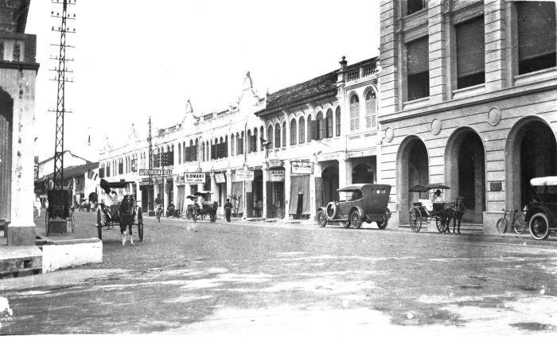
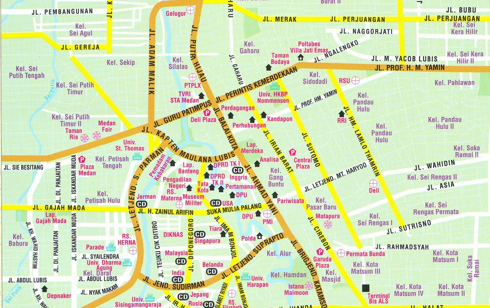
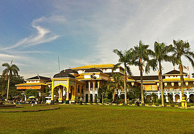
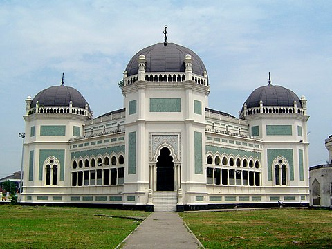
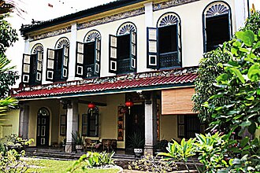

History

Medan comes from the Tamil word Maidhan or Maidhanam , which means field or wide place, which was later adopted into Malay.
In the Indonesian-Karo Dictionary (2002) written by Darwin Prinst, the word 'medan' means 'to be healthy' or 'better.'
Originally, the city was a small village called Kampung Medan, which was part of the Deli Sultanate in the 17th century.
However, in 1869, Medan expanded rapidly when the Dutch built a railway line from Tanjung Morawa to Belawan Harbor, which made it easier to export crops from North Sumatra.
This triggered significant economic growth, and Medan became an important trading center in the region.
Geography

Medan is located in the north of Sumatra Island, Indonesia, being the largest city in the North Sumatra region.
Geographically, the city is in the lowlands with several mountains around it, such as the Bukit Barisan that stretches along the island of Sumatra.
Medan is surrounded by large rivers such as the Deli River and the Babura River which are the main sources of water and transportation for the city.
The climate is wet tropical with two distinct seasons, the rainy season and the dry season.
The rainy season usually occurs between October to February, while the dry season runs from March to September.
The fertile geographical conditions and warm climate favor the growth of various types of tropical crops around Medan, including rice, palm oil, rubber, and spices.
In addition, Medan also has good access to the sea through Belawan Port, which is located about 12 kilometers north of the city center.
The port is one of the largest in Indonesia and the main gateway for international trade in the North Sumatra region.
With its strategic geographical location, Medan plays an important role in the regional economy, becoming a vital center of trade, industry and services for North Sumatra and beyond.
Destination
Medan offers a variety of interesting tourist destinations that reflect the natural and cultural richness of North Sumatra. Here are some popular tourist destinations around Medan:
Maimun Palace

Maimun Palace is the palace of the Sultanate of Deli and one of the icons of Medan, North Sumatra.
Maimun Palace has a unique interior design, combining elements of Deli Malay cultural heritage, with Islamic, Spanish, Indian, Dutch and Italian styles.
The palace building faces east and on the front side there is the Al-Mashun Mosque building or better known as the Medan Grand Mosque.
Al-Mashun Grand Mosque

Al-Mashun Grand Mosque is a mosque in the city of Medan, North Sumatra Province, Indonesia.
This mosque was built in 1906 and completed in 1909.
At the beginning of its establishment, this mosque was part of the Maimun Palace complex.
The architectural style combines Middle Eastern, Indian, and Spanish elements.
This mosque is octagonal and has wings on the south, east, north and west.
Tjong a Fie's House

Rumah Tjong A Fie is a two-storey house built by Tjong A Fie, a Hakka merchant who owned many plantation lands in Medan.
The house is designed in Chinese, European, Malay and art-deco architectural styles.
In this house, visitors can learn about the history of Tjong A Fie's life through photographs, paintings and furniture used by his family and learn about Malay-Chinese culture.